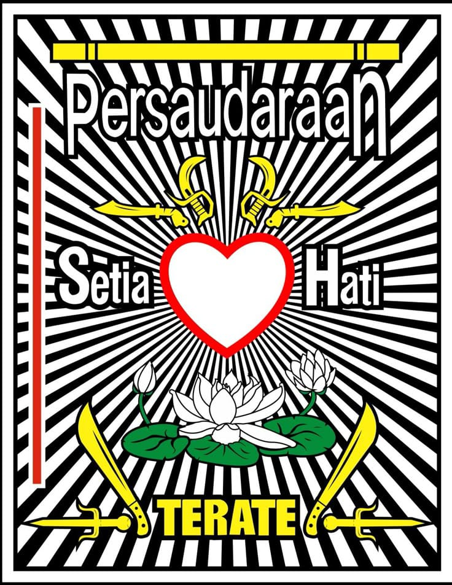

PERSAUDARAAN SETIA HATI TERATE
"Memayu Hayuning Bawana"
Jelajahi Persaudaraan KamiPersaudaraan Setia Hati Terate (PSHT) bukan sekadar perguruan pencak silat, melainkan organisasi yang didirikan di Madiun pada tahun 1922 oleh Ki Hadjar Hardjo Oetomo untuk mendidik manusia berbudi luhur, tahu benar dan salah.
Komisariat Bandar Sakti berkomitmen penuh untuk menjaga dan mewariskan ajaran luhur ini, menanamkan setia hati dalam setiap warga untuk mengabdi pada Tuhan dan negara.
Baca Filosofi Kami →
Ajaran inti tentang ketahanan mental: seberat apapun penderitaan, jika diterima dengan ikhlas dan sabar, hanya akan menjadi cobaan. Landasan untuk menghadapi segala ujian hidup.
Melambangkan kemampuan untuk hidup bermartabat di mana saja, di segala lapisan masyarakat. Warga PSHT harus mampu beradaptasi tanpa kehilangan jati diri dan kehormatan.
Meliputi Persaudaraan, Olah Raga, Bela Diri, Seni Budaya, dan Kerokhanian (Ke-SH-an). Lima pilar yang membentuk kesempurnaan seorang Warga SH Terate.
Kami menyambut Anda untuk bergabung dan berlatih bersama. Dapatkan kekuatan fisik, mental, dan spiritual.
Untuk pertanyaan lebih lanjut atau pendaftaran, silakan hubungi pengurus rayon kami:
Ketua: Andriansyah | 0857-6840-8332
Pendaftaran: Rahmat Eka | 0895-1450-9392
Gg. Tugu Peluru, Bandar Sakti
Email: pshtbandarsakti1922@gmail.com